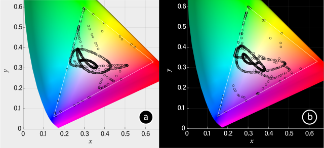

Publication
Ticha Sethapakdi, Laura Huang, Vivian Hsinyueh Chan, Lung-Pan Cheng, Fernando Fuzinatto Dall'Agnol, Mackenzie Leake, Stefanie Mueller.
Polagons: Designing and Fabricating Polarized Light Mosaics with User-Defined Color-Changing Behaviors
In Proceedings of CHI ’23.
DOI PDF Video Slides
Videos
Press
CHI Talk Video
Slides


Polagons: Designing and Fabricating Polarized Light Mosaics with User-Defined Color-Changing Behaviors


Polarized light mosaics (PLMs) are color-changing structures that alter their appearance based on the orientation of incident polarized light. While a few artists have developed techniques for crafting PLMs by hand, the underlying material properties are difficult to reason about; there exist no tools to bridge the high-level design objectives with the low-level physics knowledge needed to create PLMs. In this paper, we introduce the first system for creating Polagons: machine-made PLMs crafted from cellophane with user-defined color changing behaviors. Our system includes an interface for designing and visualizing Polagons as well as a fabrication process based on laser cutting and welding that requires minimal assembly by the user. We define the design space for Polagons and demonstrate how formalizing the process for creating PLMs can enable new applications in fields such as education, data visualization, and fashion.
INTRODUCTION
Conventional painting techniques rely on applying pigments, inks, and dyes to surfaces to create artistic imagery. But in the 1960s, some artists explored a new medium for painting: light. In particular, artists discovered materials with special properties that allowed them to change their appearance depending on how polarized light passes through them. This property is called birefringence. When a birefringent material is placed between two polarizing filters, the material is perceived as colored despite being naturally colorless. Rotating the polarizer or birefringent material changes the incident angle of polarized light, which changes the emitted color.
A handful of artists have taken advantage of the unique properties of birefringent materials to make color-changing artwork, known as polarized light mosaics (PLMs). To create these mosaics, the artists use common birefringent household materials (e.g., cellophane films and packaging tape), cut out their desired shapes with scissors or craft knives, and control the color effects by carefully layering and rotating the cutouts. While the majority of PLMs depict only a single image, some artists developed techniques for embedding multiple images into their mosaics. A notable example of this is the artist Austine Wood Comarow, who created elaborate morphing mosaics which she called "Polage".
PLMs and birefringent materials have long sparked interest in artistic and scientific communities. However, this medium has not been widely explored and used — having a high barrier to entry due to a number of design and fabrication challenges. It takes time to acquire a deep understanding of how the material behaves, i.e., being able to precisely control the color effects requires an understanding of the underlying physics. Thus, users often resort to trial and error in crafting the desired colors and effects. Even a seasoned artist like Comarow, who developed this art form for over 40 years, iteratively built up the colors by repeatedly checking them with polarizers while layering cut sheets of cellophane. While this approach can be helpful in some exploratory works, the lack of formal specifications and support tools for this medium hinders the creation of precisely specified designs.
Even with a comprehensive understanding of the underlying physics, the material is physically challenging to work with. As described above, the mosaics are made from cellophane or packaging tape, which are very thin and prone to warping or tearing. Cutting the material requires good motor skills and thus designs with complex geometries are difficult to make manually. The assembly process is yet another challenge: since color is affected by the incident angle of light, any subtle shift in the layers can produce undesired color results. Finally, complex mosaics may require hundreds of shapes, which are time-consuming to individually piece together by hand.
Encoding the underlying physics in a design tool that communicates the expected behaviors of the PLM can enable users to harness their unique properties for a wider range of applications. Thus, to address the aforementioned design and fabrication challenges, we present the first system that formalizes the process of making Polagons: PLMs with user-defined color-changing behaviors. Our system has two main components: Polagon Studio, a software toolkit for crafting PLMs, plus a fabrication process based on laser cutting and welding that requires simple manual assembly from the user. Polagon Studio automatically converts user-imported designs into PLMs and includes a visualizer that shows how different parameters, such as the image and polarizer orientations, change the design's appearance. When the user completes their design, Polagon Studio produces fabrication-ready files and generates instructions on how to use the laser cutter to fabricate the design. Our system enables makers to go beyond what was previously achievable manually, as it supports the creation of mosaics with both complex geometries and controlled color-changing behaviors. In summary, we contribute:
- An overview of the Polagon design space, including the constructions and supported color effects;
- A software toolkit that converts vector designs into Polagons and visualizes the color-changing behaviors;
- A fabrication process based on laser cutting and welding that requires minimal manual assembly;
- A technical evaluation of the color space for Polagons;
- Five application scenarios that demonstrate how Polagons can be used in practice;
- A set of user designs demonstrating our tool's expressive range.
WORKING PRINCIPLE
Similar to how stained glass mosaics are made from disjoint shards of glass held together by plaster, PLMs are constructed from disjoint stacks of cellophane held together by an acrylic base. The assembled mosaic is then sandwiched between two polarizers (Fig. 2). For clarity, we refer to the polarizer that the viewer looks through as the analyzer and the second polarizer as the polarizer. When we say "the polarizers", we are referring to both the polarizer and analyzer.
The emitted color of a cellophane stack depends on four factors: the thickness of the stack \(z\) in nm), the birefringence of the cellophane \((\beta)\), the angle of the analyzer with respect to the cellophane strain direction \((\theta)\), and the angle of the polarizer with respect to the strain direction \((\gamma)\). Using these factors, we can determine which color is shown when white light passes through the stack by applying the theory and equations described by Dall'Agnol et. al.
Computing transmittance. To determine the color of a cellophane stack with thickness \(z\) and birefringence \(\beta\) when the analyzer and polarizer are at angles \(\theta\) and \(\gamma\), we first need to compute the transmittance, \(T_r\), of the material at each wavelength \(\lambda\) of the white light that passes through the stack: $$ T_r(\lambda) = \sin^2 \theta \sin^2\phi + \cos^2 \theta \cos^2 \phi + \frac{1}{2}\sin 2\theta \sin 2 \phi \cos \Big(\frac{2\pi\beta z}{\lambda} \Big) $$ Note that \(T_r\) remains unchanged if \(\theta\) and \(\phi\) are reversed, which is the reason why the Polagon looks the same when it is flipped upside down. Since \(T_r\) depends on both \(\beta\) and \(z\), this equation additionally implies that two stacks of the same thickness can still have different colors if their birefringence values are different.
Computing tristimulus values. After computing the transmittance \(T_r\) for each wavelength of white light, we can use the transmittance values to compute the tristimulus color values (\(X\), \(Y\), \(Z\)) across all visible wavelengths: $$X = \int_{380}^{780} \bar{x}(\lambda)T_r(\lambda)\cdot E0 \ d\lambda $$ $$Y = \int_{380}^{780} \bar{y}(\lambda)T_r(\lambda)\cdot E0 \ d\lambda $$ $$Z = \int_{380}^{780} \bar{z}(\lambda)T_r(\lambda)\cdot E0 \ d\lambda$$ where \(\bar{x}, \bar{y}\), and \(\bar{z}\) are constants for each wavelength obtained from the CIE 1931 color matching functions with a 1nm stepsize, which describe how a standard human observer perceives colors. \(E0\) is a constant radiance for all wavelengths, which is chosen as \(1 \ W/m^2\). The limits of the integrals represent the visible light spectrum in nanometers.
Transforming tristimulus values into RGB. Finally, to determine the emitted color in RGB space, we apply a standard color space transformation to the tristimulus values: $$[R,G,B]^\intercal= M^{-1} \cdot [X,Y,Z]^\intercal$$ where \(M\) is a linear transformation matrix calculated from RGB reference primaries.
Accommodating multiple cellophane types. The above equations make the assumption that stacks are constructed from a single type of cellophane. Mixing multiple types of cellophane, each with their own native thicknesses and birefringence, gives us access to a larger color palette. To capture these cases, we modify our original expression for \(T_r\). Let \(\beta_i\) be the birefringence of cellophane film \(i\) and \(z_i\) be its thickness. Then: $$T_r(\lambda) = \sin^2\theta \sin^2\phi + \cos^2 \theta \cos^2 \phi + \frac{1}{2}\sin 2\theta \sin 2 \phi \cos \Big(\frac{2\pi\sum_i \beta_i z_i}{\lambda} \Big)$$
DESIGN SPACE
We use our knowledge of the material properties and physics principles to inform a design space for Polagons. Here we describe the mosaic constructions and achievable color effects in increasing order of complexity.
Single color mosaics and color-to-clear transitions. The most basic mosaic uses a single layer of cellophane sandwiched between the two polarizers, which results in a single-colored design (Fig. 3). Different single-colored shapes can be created by cutting pieces from the cellophane and arranging them on the acrylic base with small gaps in-between. When both polarizers are aligned with the cellophane's strain direction}, i.e., the direction the cellophane was stretched in during manufacturing, the mosaic appears transparent. As the mosaic is rotated, its appearance becomes progressively more colorful, reaching its maximum saturation when its orientation relative to the polarizers is 45°. Rotating it further fades the color until it becomes colorless again at 90°. Thus, the mosaic colors are identical at 90° angle differences, i.e., its appearance is the same at 45°, 135°, 225°, and 315°. Assuming that the relative angles are the same, flipping the mosaic upside down also does not change its colors.
Figure 3. Changing the opacity of a mosaic by adjusting its orientation with respect to the polarizers.
Complementary colors. The alignment of the polarizers with respect to each other also affects the appearance of the design (Fig. 4). Polarizers are parallel when they are 0° with respect to each other and orthogonal when they are 90° to each other. Colors under parallel and orthogonal polarizers are complementary to each other. Thus, by keeping the mosaic static and rotating either the analyzer or polarizer, one can achieve two different colors with a single layer of cellophane. Furthermore parallel polarizers let light pass through, while orthogonal polarizers block light. Thus, areas not covered by cellophane are white under parallel polarizers and black under orthogonal polarizers.
Figure 4. Inverting colors by orienting the polarizers orthogonally to each other.
Creating colors and multicolored mosaics. We can "mix" different colors by stacking multiple pieces of cellophane together and then create multicolored designs by arranging individual color stacks to form an image (Fig. 5). Assuming that the strain direction is the same for each color stack, the aforementioned fading and inversion effects work in the same way as the single color variants.
Figure 5. Multicolored mosaics are composed from stacks of cellophane of different heights.
Color-to-color transitions. We can create transitions between two different mosaics by layering them on top of each other before sandwiching them between the polarizers (Fig. 6). Recall that mosaics are colorless at 0° rotations and reach full saturation at 45° rotations relative to the polarizers. By positioning the mosaics at a 45° offset to each other, we ensure that one of them is fully saturated only when the other one is fully colorless. Rotating the mosaics in tandem thereby results in a "crossfading" effect. The same effect can be achieved by keeping the mosaics static and instead rotating both polarizers.
Figure 6. Performing color-to-color transitions by rotating either the mosaics or the polarizers in tandem.
Masking images. A mask on top of the images can be created by inserting an additional polarizer between the topmost mosaic and analyzer (Fig. 7). The visibility of the mask depends on its alignment relative to the analyzer. Since polarizers block light when they are orthogonal, the mask is fully opaque when it is orthogonal to the analyzer and fully transparent when the two are parallel.
Figure 7. Changing the visibility of the arrow-shaped masking layer by adjusting its orientation relative to the analyzer.
Summary of mosaic constructions. Figure 8 summarizes the different mosaic constructions for Polagons. The single mosaic construction consists of only one mosaic sandwiched between two polarizers (Fig. 8a), which yields a single image that can transition from transparent to opaque, as well as invert its color. The more advanced double mosaic construction contains a second mosaic layer between the polarizers (Fig. 8b), which adds support for two images that can cross-fade into each other. The single mosaic, single mask and double mosaic, single mask constructions are variants of the first two constructions, which make use of a third polarizer to mask out parts of the mosaics (Fig. 8c,d).
Figure 8. All Polagon constructions.
POLAGON STUDIO
Polagon Studio is a toolkit that allows users to explore the Polagon design space, with full support for constructions that contain up to two mosaic layers and one masking layer. Polagon Studio comes equipped with a pre-populated database of the feasible color palettes and their stack compositions, based on our supply of cellophane (0.023mm, 0.03mm, 0.035mm, 0.045mm, 0.053mm).
The core workflow is comprised of importing vector designs and exploring the color space, interacting with the virtual Polagon to preview the color transitions, and finally exporting the design for fabrication. We describe the key features below.
Loading and editing designs. When the user imports their design, the interface remaps the colors in the design to the closest matching colors in the palette (under aligned polarizers). It then displays the "Edit Design" window (Fig. 9). Within this window, users may explore the available color palette and make changes to the colors in their mosaic. Users can see their original design, the recolored design, their original color palette, and the recolored palette. They can additionally see all available swatches in the database. Hovering over a swatch in the available color palette displays a tooltip that shows the user the quantity and types of cellophane that the color is made from.

Figure 9. The 'Edit Design' window, which loads when the user imports a mosaic.
Users can further adjust the color palette by filtering the types of cellophane they wish to include (Fig. 10), which can be useful if the user only has certain thicknesses of cellophane available. Filtering the palette automatically recolors the design to use the closest matching colors in the remaining color palette.
Figure 10. Filtering the palette.
Interacting with the virtual Polagon. Polagon Studio allows users to interact with the virtual Polagon and visualize the different color changing behaviors via the "Interact" window (Fig. 11). The left side of the "Interact" window shows the Polagon decomposed into its constituent components (i.e., analyzer, mask, mosaics, and polarizer), as well as the orientations of each. The right side shows the effect that those rotations have on the Polagon's appearance. The user can adjust the orientation of each component by either rotating its corresponding knob or entering a rotation value. Users can also rotate multiple components at once by clicking on the knobs while pressing a hot key.

Figure 11. Using the "Interact" window to see the effects of rotating the constituent parts of the Polagon.
Fabricating the design. Once the user is ready to fabricate their design, they can export fabrication-ready files from Polagon Studio (Fig. 12). Polagon Studio generates multiple laser cutting files for each mosaic and a single fabrication file for the mask layer. Shapes corresponding to the first mosaic are exported at a 45° angle, which later ensures that only one mosaic is visible at a time. Polagon Studio additionally assists users with various aspects of the fabrication process itself.
At a high level, the process of laser cutting a mosaic involves placing a cellophane sheet into the laser cutter, running the cutting process, removing the outer areas of the sheet, and repeating until all fabrication steps are complete. For each fabrication step, the interface specifies the fabrication file name, which type of cellophane is needed, and what laser cutting settings should be used. The interface also visualizes which shapes are being cut next in red and displays all previously cut shapes in gray.

Figure 12. Exporting the fabrication files and fabricating the mosaic.
APPLICATION EXAMPLES
We present five different application examples to demonstrate how Polagons can be used in practice.
Reconfigurable fashion components. To show how Polagons can facilitate rapid personalization, we created a pair of reconfigurable glasses inspired by the "kaleidoscopic glasses" worn at festivals (Fig. 13). Each lens consists of a double mosaic layer with a single mask and integrated polarizers. Since each lens produces 8 keyframes, there are 64 unique configurations in total. To allow users to quickly access the different keyframes of the design, we added notches to the border of the frame to serve as reference points for the rotations.

Figure 13. Reconfigurable glasses. Each lens was made with two mosaic layers and one mask layer.
Mechanical animations. We used Polagons to create a clock with animations that are created based on the clock's existing mechanical rotations (Fig. 14). Unlike standard Polagon constructions, this design uses four mosaic layers, which was possible by exporting from Polagon Studio twice. The layers containing the birds and night sky are attached to the minute hand and offset by 45°, which allows them to fade in and out of each other. The clouds rotate with the hour hand while the mountain background is a static element attached to the back of the clock. Finally, the cityscape is a static masking layer that is always visible.

Figure 14. An animated clock made with four mosaic layers and one mask layer.
Passive displays. We incorporated a Polagon into a sliding glass door to transform it into a passive display (Fig. 15). To do this, we affixed a single mosaic and the polarizer to a glass door and attached the analyzer to the opposite door, which causes the display to be visible when one of the doors slides open.


Figure 15. A glass door display made with a single mosaic layer.
Data physicalizations. We used a two-mosaic construction to create a data physicalization that shows how the COVID-19 hot spots in the United States changed between July and August 2021 (Fig. 16). The viewer switches between the July 2021 and August 2021 charts by rotating the polarizers in tandem. We additionally printed the description and color legend on transparency film and placed it behind the Polagon, giving us control over which elements of the design should remain static.
Figure 16. An interactive map made with two mosaic layers.
Multi-user displays. To explore how we can use Polagons to show user-dependent information, we created an anatomy diagram that uses a single mosaic, single mask construction with one polarizer and two analyzers (Fig. 17). The two analyzers are orthogonal to each other and are held by two users. If both users were to look at the diagram from the same point of view, one will see the diagram without the labels while the other will see it with the labels.


Figure 17. An anatomy diagram with user-dependent views, made with one mosaic layer, one mask layer, and two analyzers.
TECHNICAL EVALUATION
We compute the theoretical color gamut given our cellophane types and compare the physical colors to their predicted values.
Determining color gamut. To determine the color gamut for our supply of cellophane, we calculated all possible colors from stacking different cellophane types. We only considered a total stack thickness of at most \(z = 0.25\)mm, as we found that thicknesses larger than that produced mostly gray and indistinguishable colors. For all possible values of \(\sum_i \beta_i z_i\), such that \(\sum_i z_i \leq 0.25\)mm, we calculated the most saturated colors under parallel and orthogonal polarizers, i.e., the values at \(\theta = \phi=45^\circ\) for parallel polarizers and \(\theta = 45^\circ\), \(\phi=-45^\circ\) for orthogonal polarizers. Based on this procedure, we found that our stock of cellophane produces 492 unique RGB values for each orientation. We then plotted these values on the CIE-xy color gamut chart (Fig. 18). For colors predicted outside the gamut, we follow the procedure from Dall'Agnol et. al and project them onto the edge of the gamut region, as those colors cannot be represented in a monitor display. From this chart, we see that points are distributed along the perimeter of the RGB triangle, which demonstrates that our palette captures the spectral colors. Our gamut also reveals several clusters of points in the green and purple regions, which indicates that our cellophane is biased towards producing green and purple hues. In addition, our gamut has a large cluster of points in the center, which suggests that our palette includes many desaturated colors that may be hard to distinguish. Note that these insights are based on the cellophane we selected; a different set of materials would yield a palette with a different quantities and distributions of colors.

Figure 18. Color gamut given our supply of cellophane under (a) parallel and (b) orthogonal polarizers.
Figure 18. Color gamut given our supply of cellophane under (a) parallel and (b) orthogonal polarizers.
Checking color fidelity. To verify that our model makes reasonable predictions, we compared colors predicted by our system to their physical counterparts. For each cellophane type, we created small (34mm × 34mm) color chips from a single layer of material. We then digitally generated 100 random cellophane compositions from our available cellophane types and physically reconstructed them by aligning and stacking the color chips (Fig. 19). We photographed the reconstructions under a single white light source.
Quantifying differences between colors remains an open challenge and there is no universal metric that fully captures the nuances of human vision. For our experiments, we picked a weighted Euclidean distance function to compute the RGB distance between the predicted and physical swatch pairs. We chose this metric because it is a stable algorithm that performs comparably to perceptually uniform color models. Figure 20 visualizes the results for the 5 most similar and least similar swatches from our experiment. On a scale of 0 to 765 (i.e., 0 to 255 per RGB channel), the mean color distance across all pairs is 119.01 (σ: 42.93), which yields an accuracy of 84.44%. These results confirm that our modified transmittance equation, which accounts for different cellophane thicknesses and birefringence values, yields predictions that approximate the physical colors well. In practice, we also found that users do not see these visual differences as being more significant than that of standard fabrication processes which involve translating a digital color into its physical representation (e.g., colored 2D or 3D printing).

CONCLUSION
In this paper, we presented the first software toolkit and digital fabrication process for PLMs with controlled color-changing behaviors. We introduced the design space that defines the color-changing effects and construction principles for Polagons. The application examples made by both the authors and external users showed how Polagons can be used for a range of domains, such as fashion, education, and visualization. Our technical evaluation demonstrated how Polagons can support hundreds of colors using only a few types of cellophane.
Creating digital fabrication processes for traditional making practices has the benefit of preserving art forms that are typically only accessible to skilled individuals. Austine Comarow, who was believed to have pioneered PLMs, unfortunately passed away in 2020 and was one of the few people in the world who could create intricate PLMs that animate in a controlled manner. We hope Polagons can expand the community of modern polarized light mosaicists and, by making the process accessible to makers, add a new programmable material to the diverse palette of options in HCI.